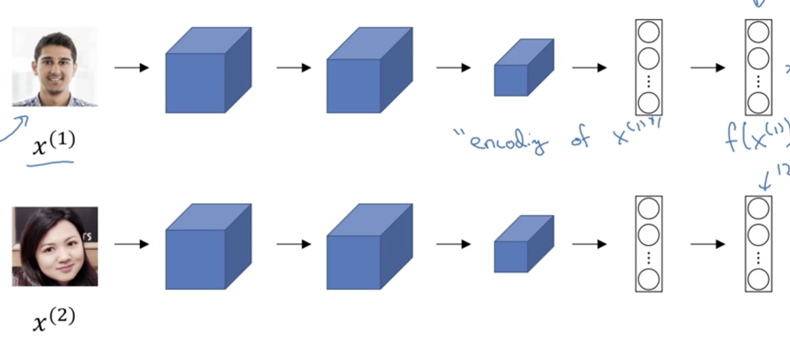
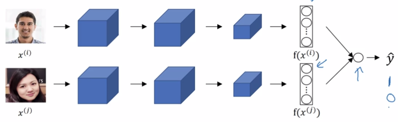

Taigman et. al., 2014. DeepFace closing the gap to human level performance
1. 网络结构

图像x1 --NN--> 向量v1
图像x2 --NN--> 向量v2
d(图像1，图像2) = ∣∣v1−v2∣∣22
2. 损失函数
y^=σ(W(∣v1−v2∣)+b)
y^=1 ==> 同一个人
y^=0 ==> 不是同一个人
∣v1−v2∣这一部分可以有其它变种。
3. 一种加速计算的trick
训练好的NN可以看作是一个特定的函数f。
可以提前把database中的图像对应的向量都提前算出来，代替原始的样本图像。
4. 把人脸识别转成二分类问题

每张图像生成一个向量，例如xi --> f(xi)，xj --> f(xj)
y^=σ(∑kwid(f(xi),f(xj))+b)
其中d(f(xi),f(xj))代表d(f(x_i), f(x_j))代表f(x_j)和f(x_j)的相似度。
例如X方相关度：
d(f(xi),f(xj))=f(xi)+f(xj)(f(xi)−f(xj))2
在预测时，database中图像的f(x)可以提前准备好（预训练）。
每次只需要重新计算要预测的图像的f(x)即可。